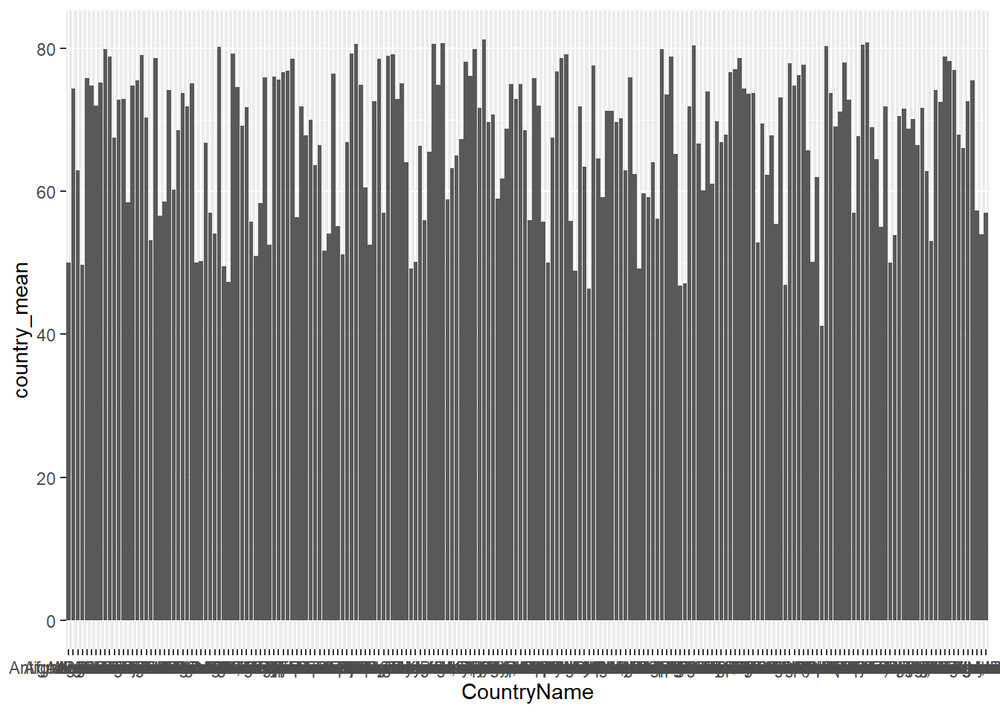
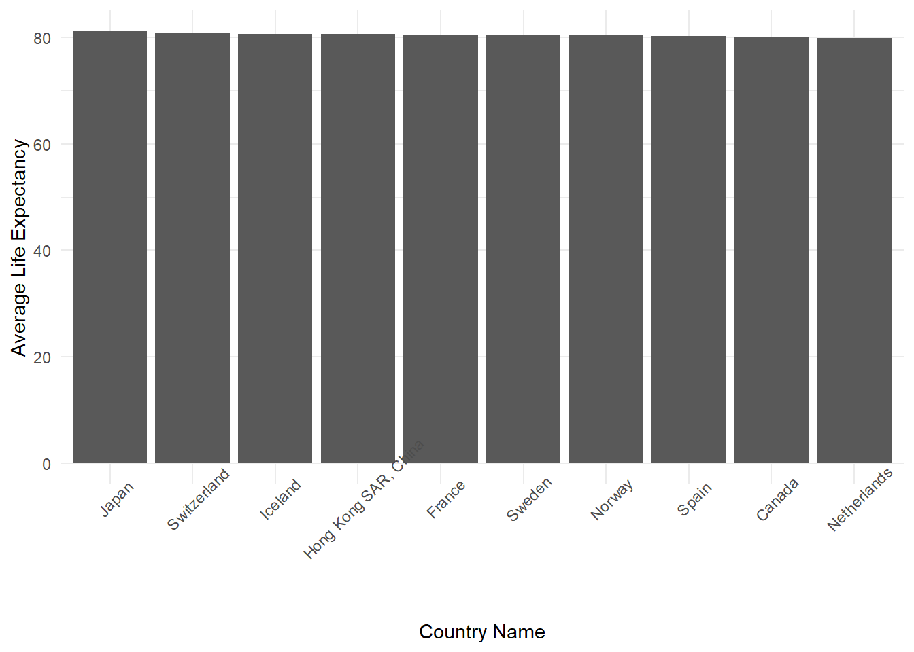
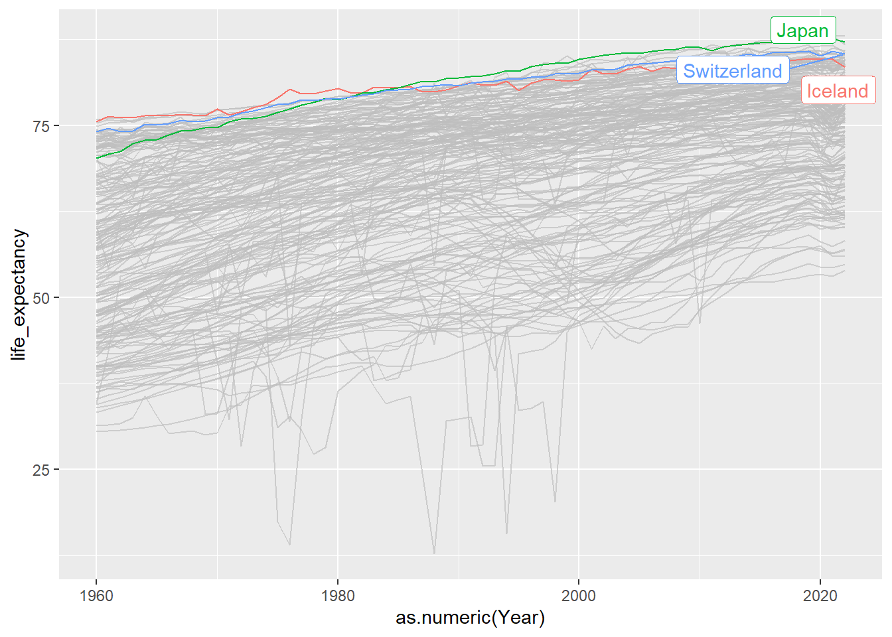
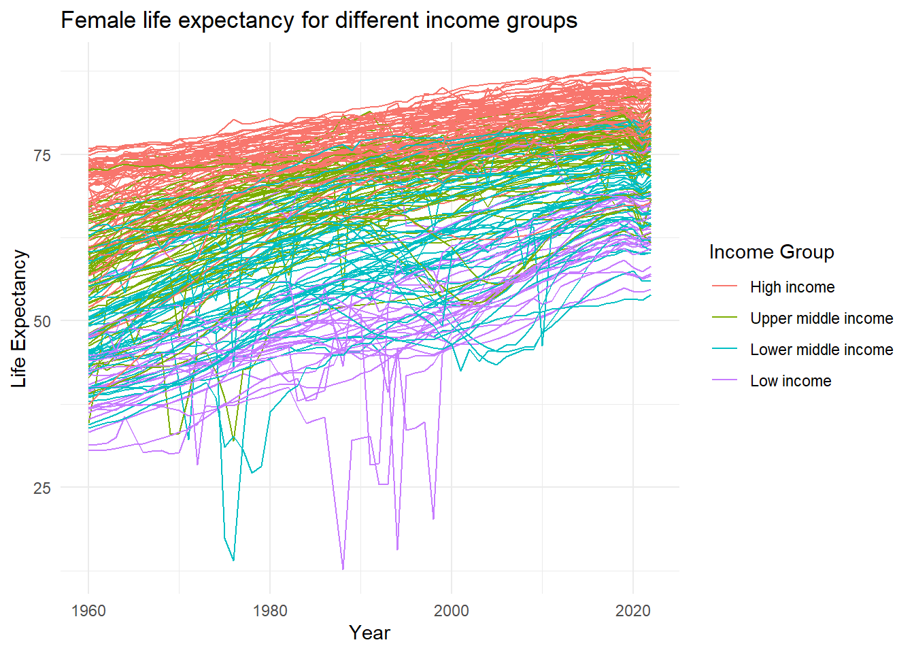

library(tidyverse)
library(gghighlight)Project in R – Female Life Expectancy Project
Load the packages
Data Sources
- Please download the data in CSV format from https://data.worldbank.org/indicator/SP.DYN.LE00.FE.IN
- Then unzip the .zip file and rename the unzipped folder as Original Data.
- Indicator_code: SP.DYN.LE00.FE.IN
- Data last updated date: 10/24/2024
Life expectancy at birth indicates the number of years a newborn infant would live if prevailing patterns of mortality at the time of its birth were to stay the same throughout its life.
Female Life Expectancy Data Source:
- United Nations Population Division. World Population Prospects: 2022 Revision;
- Statistical databases and publications from national statistical offices;
- Eurostat: Demographic Statistics.
Three Datasets in the Original Data Folder
Dataset 1: API_SP.DYN.LE00.FE.IN_DS2_en_csv_v2_11541.csv
- The variables are:
Country Name,Country Code,Indicator Name,Indicator Code,1960–2022.
Dataset 2: Metadata_Country_API_SP.DYN.LE00.FE.IN_DS2_en_csv_v2_11541.csv
- Country Information Data, the variable are
Country Code,Region,IncomeGroup,SpecialNotes,TableName.
Dataset 3: Metadata_Indicator_API_SP.DYN.LE00.FE.IN_DS2_en_csv_v2_11541.csv
- This data will NOT be used in this project.
Data Cleaning
Import Data and check missing values
LE <- read_csv("Original Data/API_SP.DYN.LE00.FE.IN_DS2_en_csv_v2_11541.csv", skip = 4)
LE %>%
dplyr::select(everything()) %>%
summarize_all(~sum(is.na(.))) %>%
print(width = Inf) # show all the columns
#> # A tibble: 1 × 69
#> `Country Name` `Country Code` `Indicator Name` `Indicator Code` `1960` `1961`
#> <int> <int> <int> <int> <int> <int>
#> 1 0 0 0 0 14 13
#> `1962` `1963` `1964` `1965` `1966` `1967` `1968` `1969` `1970` `1971` `1972`
#> <int> <int> <int> <int> <int> <int> <int> <int> <int> <int> <int>
#> 1 13 14 14 14 13 13 13 13 13 13 13
#> `1973` `1974` `1975` `1976` `1977` `1978` `1979` `1980` `1981` `1982` `1983`
#> <int> <int> <int> <int> <int> <int> <int> <int> <int> <int> <int>
#> 1 12 13 13 13 13 11 12 11 11 11 11
#> `1984` `1985` `1986` `1987` `1988` `1989` `1990` `1991` `1992` `1993` `1994`
#> <int> <int> <int> <int> <int> <int> <int> <int> <int> <int> <int>
#> 1 11 11 10 10 10 10 8 9 9 9 8
#> `1995` `1996` `1997` `1998` `1999` `2000` `2001` `2002` `2003` `2004` `2005`
#> <int> <int> <int> <int> <int> <int> <int> <int> <int> <int> <int>
#> 1 7 8 8 8 8 7 8 8 8 8 7
#> `2006` `2007` `2008` `2009` `2010` `2011` `2012` `2013` `2014` `2015` `2016`
#> <int> <int> <int> <int> <int> <int> <int> <int> <int> <int> <int>
#> 1 8 8 8 8 8 8 8 8 8 8 8
#> `2017` `2018` `2019` `2020` `2021` `2022` `2023` ...69
#> <int> <int> <int> <int> <int> <int> <int> <int>
#> 1 8 9 9 9 8 9 266 266
country <- read_csv("Original Data/Metadata_Country_API_SP.DYN.LE00.FE.IN_DS2_en_csv_v2_11541.csv")
country %>%
dplyr::select(everything()) %>%
summarize_all(~sum(is.na(.))) %>%
print(width = Inf) # show all the columns
#> # A tibble: 1 × 6
#> `Country Code` Region IncomeGroup SpecialNotes TableName ...6
#> <int> <int> <int> <int> <int> <int>
#> 1 0 48 49 138 0 265- In LE, We should remove columns
2023and...69since they are empty columns. - In country, we should remove column
...6.
LE <- LE %>%
select(-`2023`, -...69)
country <- country %>%
select(-...6)Check the distinct values
LE %>%
dplyr::select(everything()) %>%
summarize_all(~n_distinct(.)) %>%
print(width = Inf)
#> # A tibble: 1 × 67
#> `Country Name` `Country Code` `Indicator Name` `Indicator Code` `1960` `1961`
#> <int> <int> <int> <int> <int> <int>
#> 1 266 266 1 1 247 248
#> `1962` `1963` `1964` `1965` `1966` `1967` `1968` `1969` `1970` `1971` `1972`
#> <int> <int> <int> <int> <int> <int> <int> <int> <int> <int> <int>
#> 1 249 247 244 249 248 251 249 250 249 251 248
#> `1973` `1974` `1975` `1976` `1977` `1978` `1979` `1980` `1981` `1982` `1983`
#> <int> <int> <int> <int> <int> <int> <int> <int> <int> <int> <int>
#> 1 250 249 248 249 246 252 249 252 247 251 251
#> `1984` `1985` `1986` `1987` `1988` `1989` `1990` `1991` `1992` `1993` `1994`
#> <int> <int> <int> <int> <int> <int> <int> <int> <int> <int> <int>
#> 1 252 249 252 250 250 251 253 250 253 250 254
#> `1995` `1996` `1997` `1998` `1999` `2000` `2001` `2002` `2003` `2004` `2005`
#> <int> <int> <int> <int> <int> <int> <int> <int> <int> <int> <int>
#> 1 254 251 250 250 247 248 245 248 243 243 247
#> `2006` `2007` `2008` `2009` `2010` `2011` `2012` `2013` `2014` `2015` `2016`
#> <int> <int> <int> <int> <int> <int> <int> <int> <int> <int> <int>
#> 1 248 246 242 245 244 240 244 245 245 245 245
#> `2017` `2018` `2019` `2020` `2021` `2022`
#> <int> <int> <int> <int> <int> <int>
#> 1 244 247 244 246 247 247
country %>%
dplyr::select(everything()) %>%
summarize_all(~n_distinct(.)) %>%
print(width = Inf)
#> # A tibble: 1 × 5
#> `Country Code` Region IncomeGroup SpecialNotes TableName
#> <int> <int> <int> <int> <int>
#> 1 265 8 5 114 265- We delete the
Indicator NameandIndicator Codein LE - We delete the
SpecialNotesandTableNamein country
LE <- LE %>%
dplyr::select(-`Indicator Name`, -`Indicator Code`) %>%
filter(complete.cases(.)) # Remove the observations with missing values
country <- country %>%
dplyr::select(-SpecialNotes, -TableName) %>%
filter(complete.cases(.))Tidy and Join
LE <- LE %>%
pivot_longer(`1960`:`2022`, names_to = "Year", values_to = "life_expectancy") %>%
rename(CountryName = `Country Name`, CountryCode = `Country Code`)
country <- country %>%
rename(CountryCode = `Country Code`)
LE_ctry <- LE %>%
inner_join(country, by = "CountryCode")
dim(LE_ctry)
#> [1] 12726 6- There are 12726 observations and 6 columns.
Data Visualization
LE_ctry %>%
group_by(CountryName) %>%
dplyr::summarize(country_mean = mean(life_expectancy)) %>%
ggplot(aes(x = CountryName, y = country_mean)) + geom_col()
Top 10 LE
LE_ctry %>%
group_by(CountryName) %>%
dplyr::summarize(country_mean = mean(life_expectancy)) %>%
arrange(desc(country_mean)) %>%
top_n(10) %>%
mutate(CountryName = fct_inorder(CountryName)) %>%
ggplot(aes(x = CountryName, y = country_mean)) + geom_col() + labs(x = "Country Name",
y = "Average Life Expectancy") + theme_minimal() + theme(axis.text.x = element_text(angle = 45))
Female life expectancy by year – highlight the top 3
LE_ctry <- LE_ctry %>%
group_by(CountryName) %>%
mutate(country_avg = mean(life_expectancy))
LE_ctry %>%
ggplot(aes(x = as.numeric(Year), y = life_expectancy, color = CountryName)) +
geom_line() + gghighlight(country_avg > 80.65)
Summary of result:
Japan, Iceland, Switzerland are the top 3 countries with high female life expectancy on average.
Life Expectancy vs Income Group
LE_ctry <- LE_ctry %>%
mutate(IncomeGroup = factor(IncomeGroup, levels = c("High income", "Upper middle income",
"Lower middle income", "Low income")))
LE_ctry %>%
ggplot(aes(x = as.numeric(Year), y = life_expectancy, group = CountryName, color = IncomeGroup)) +
geom_line() + theme_minimal() + labs(title = "Female life expectancy for different income groups",
x = "Year", y = "Life Expectancy", color = "Income Group")
Conclusion:
- High income countries generally have higher female life expectancy.
- Low income countries have lower female life expenctancy.